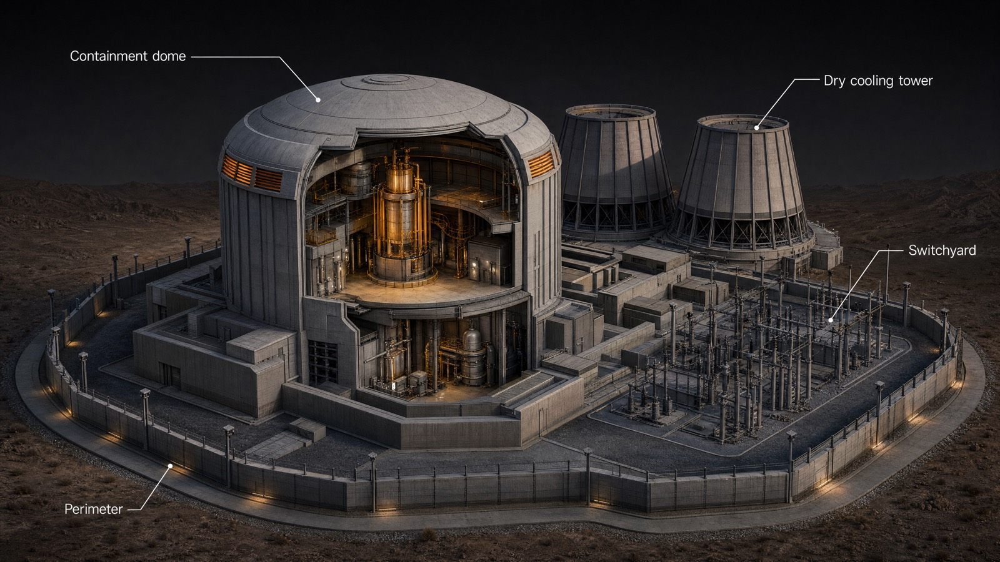
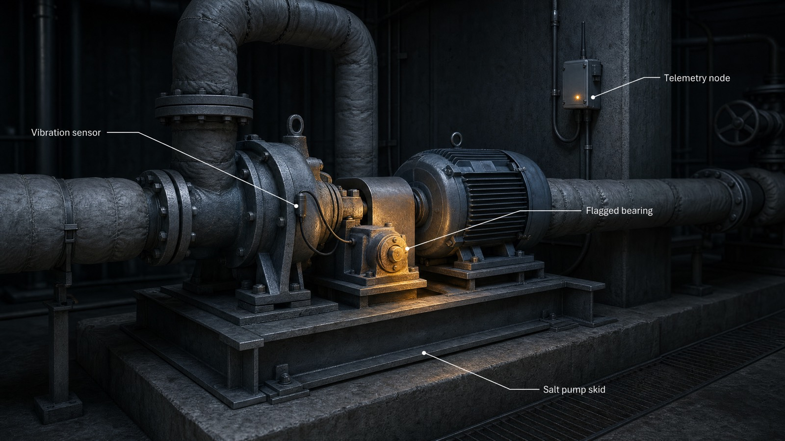
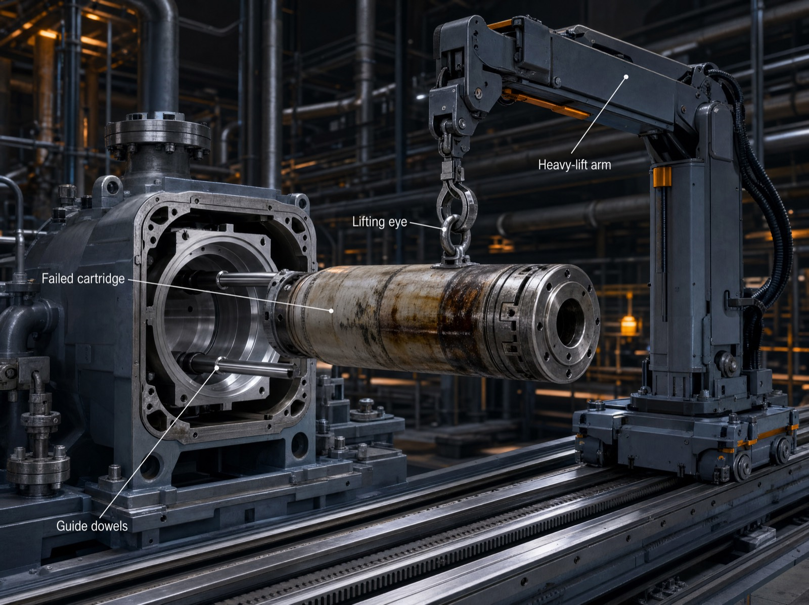
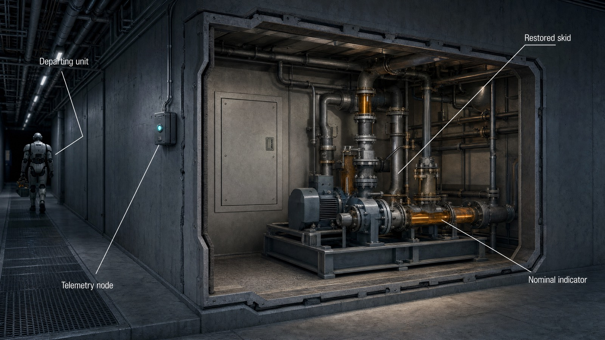
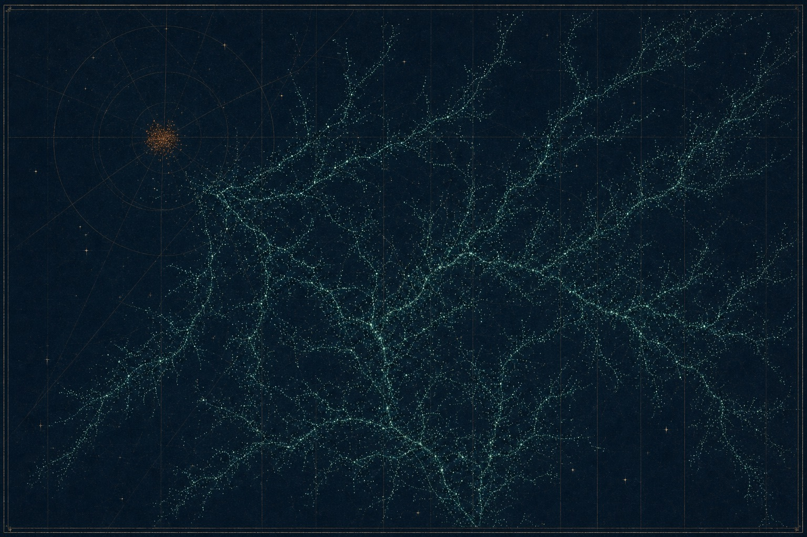
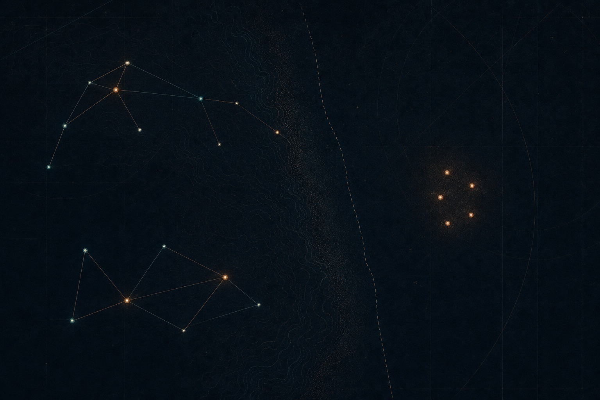
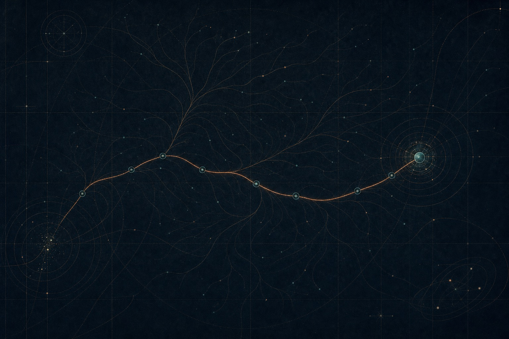
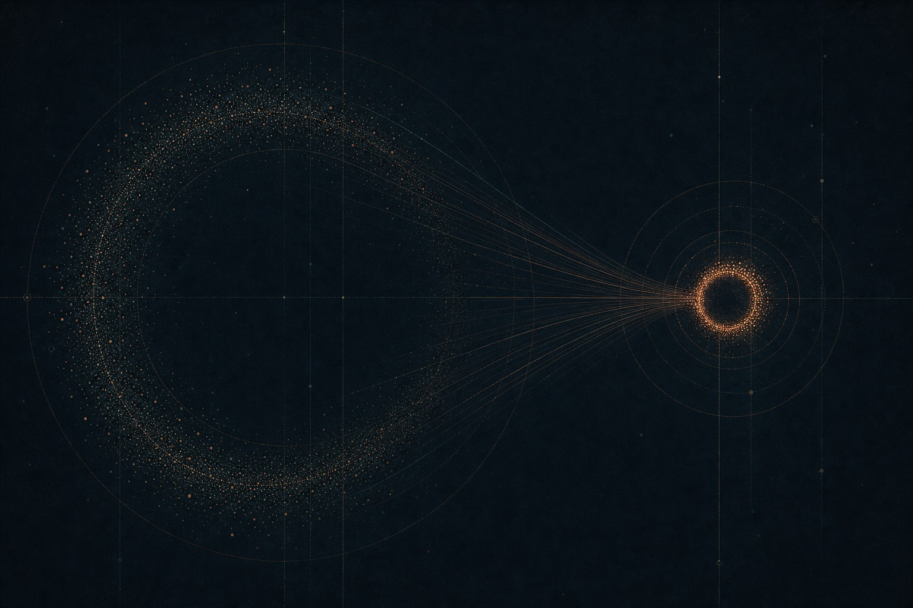

Grounded in your company, they surface what everyone else misses — and get sharper with every outcome.
Not synthetic text — synthetic experience: worlds, decisions, consequences. Generation stops only when measured coverage of the space saturates.
The machine maps the decision space as it explores it — including what hasn't happened yet.
From minimal seeds, deep decision sequences expand across the whole mapped space — not just around the sample.
Coverage is a number, measured continuously. Generation halts only when it saturates.
Domain training teaches the space of possible worlds; your company's evidence locates the one that's real.
the domain's decision space — expertise concentrating where your company lives
From a single seed: a self-maintaining power plant — engineering, failure modes, repair doctrine — coherent enough to interrogate. A scenario is a region to master, not a fact to memorize.




one repair cycle, followed through · see the world sample →
Coverage, context, discovery, transfer — measured independently. All of it points the same way.
every figure traces to a study · full methods and data on request
Four studies and a world sample — every figure traces to a run; methods and data on request.

Generated sequences cover a mapped concept space a frontier run barely enters.
Read the study →
A blind run surfaces five mechanisms missing from a frontier-built world model — the decision reverses.
Read the study →
Same model, same question — our data in context more than doubles its high-impact findings.
Read the study →
One planning skill from generated plans closes most of a 13× size gap.
Read the study →One specialist runs a function. A few, composed, run the company — each grounded in your reality, each outcome making them more yours.
Earned in public: studies first, then specialists judged blind against strong baselines on frozen historical decisions.
Together since IIT Delhi, 2006.
Trains the models
Full LLM lifecycle — data to weights to serving. Vision systems shipped worldwide for Walmart and Disney. Named inventor on four US patents in computer vision.
Production AI at scale
Edge and cloud inference. Face recognition ranked worldwide top-25 on the US NIST FRVT benchmark; AI running on over a million devices at low latency.
Deploys into companies
CTO of Zomato through its hyper-growth — today a ~$28B listed company. Founded Roposo, acquired by InMobi's Glance. Founder & CEO of BarRaiser.